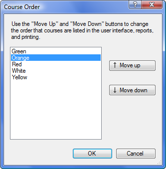

Course/Course Order
The Course Order command changes the order in which the courses are displayed. By default, courses are displayed in the order in which you added them to the event. If you would like the courses to be displayed in a different order, use this command to change the order of the courses.

To change the order of courses, selected the course you want to move and click the "Move Up" or "Move Down" buttons to move it to the correct place in the order.
The order of the courses affects the following:
- The order of the course tabs.
- The order of courses in reports.
- The order of courses in printing.